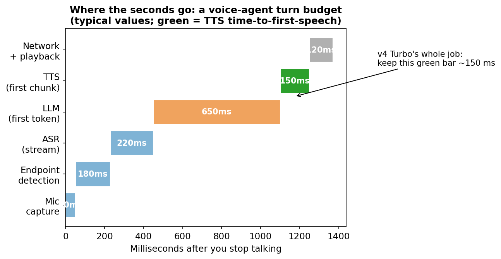
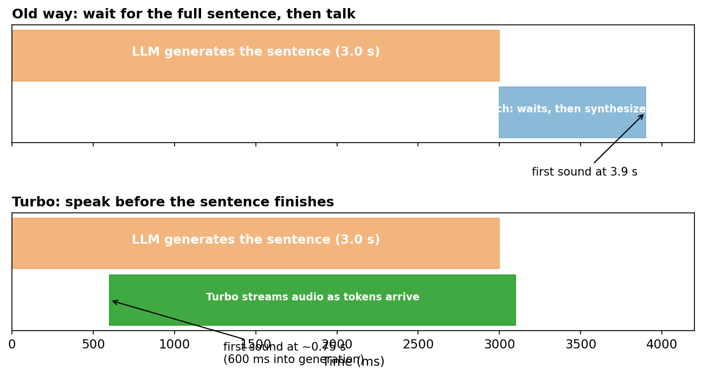
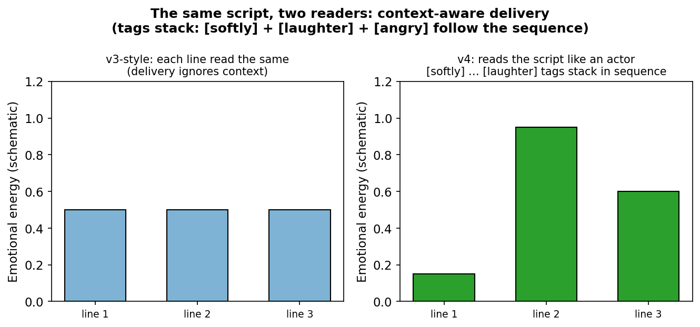
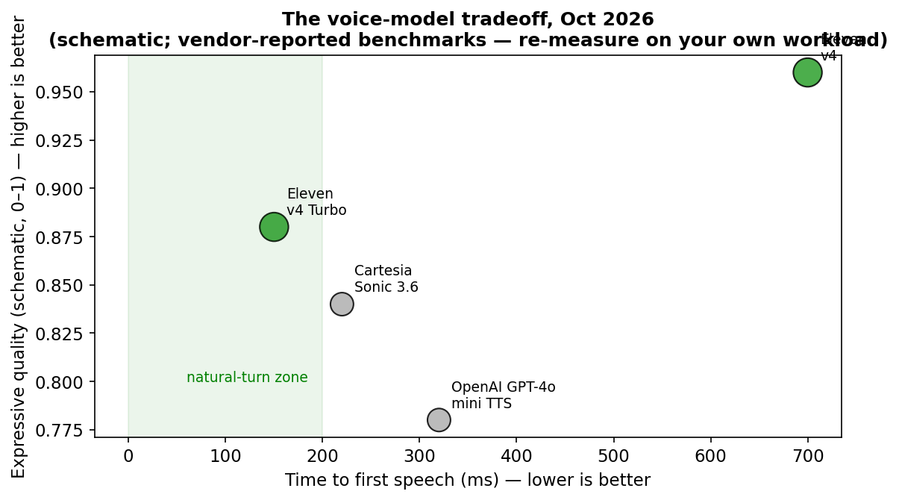

How a text-to-speech model learned to read stage directions, hold one voice across a whole audiobook, and start speaking before the LLM finishes the sentence.
The problem nobody hears
Talk to a voice agent and you'll notice the pause. You finish your sentence. Silence. Then the answer begins — slightly too late to feel like conversation. That gap isn't the LLM thinking. It's the assembly line: your speech gets transcribed, the LLM writes the full answer, and only then does the voice model read it aloud. Three stages, one queue. ElevenLabs' new Eleven v4 (quality-first) and v4 Turbo (speed-first), launched September 28, 2026, attack that pipeline from both ends — and the Turbo variant's headline number is worth staring at: ~150 ms median time-to-first-speech in the company's own WebSocket benchmark, down in the range where a pause stops feeling like a queue and starts feeling like a human gathering their thoughts.
ELI5: how a modern voice model works
A text-to-speech model has three jobs, like a tiny theater company:
- Pronunciation — the phoneme planner: turn letters into sounds. ("Read" is reed here, red there — context matters.)
- Prosody — the director: decide tone, pacing, pauses, emphasis. Same sentence whispered vs. shouted is all prosody.
- Voice identity — the actor: a compact "voice embedding" learned from a short audio sample. Give it 10 seconds of your voice and it builds your vocal fingerprint.
Older models read like an understudy doing cold reads: one line at a time, flat delivery, voice drifting by chapter three of an audiobook. Eleven v4's new architecture is built around context: it reads the whole script — who is speaking, what just happened, how each line should land — and keeps the speaker's identity stitched together across long text. It even understands inline stage directions: type [softly] I'm not angry, [laughter] I just think it's funny and the model follows the tags in sequence, stacking them within a single line. That's the leap from "text reader" to "voice actor."
The two models: quality vs. latency
ElevenLabs shipped two variants on the same research, aimed at two different jobs:
| Eleven v4 | Eleven v4 Turbo | |
|---|---|---|
| Built for | Audiobooks, dubbing, character performance, ads | Voice agents, live calls, realtime assistants |
| Latency | Quality-first | ~100 ms median inference, ~150 ms time-to-first-speech (vendor-measured, streaming) |
| Streaming | REST + streaming endpoints | Bidirectional: audio starts before the sentence finishes |
| Languages | 90+ (up from 70 in v3) | Same |
| Cloning | 10-second Instant Voice Clone; Professional Voice Clone support restored after v3 dropped it | Same |
The biggest reported quality jumps are in Japanese, Brazilian Portuguese, Mandarin, and Cantonese — the languages where previous models struggled most. The company also claims the #1 rank on the Artificial Analysis Speech Arena at launch, including the benchmark's highest pronunciation-robustness score yet. (Caveat: that's a third-party evaluator, not independent reproduction — still the best apples-to-apples number the industry has.)

How Turbo hits 150 ms: stream, don't queue
The diagram above shows a typical voice-agent turn budget: endpoint detection (~180 ms) + streaming ASR (~220 ms) + LLM first token (~650 ms) + TTS first chunk + network. Turbo's whole job is keeping the green bar small, and the trick is architectural, not magic: overlap synthesis with generation.

A batch TTS model waits for the LLM to finish the entire sentence, then synthesizes — time-to-first-audio grows with sentence length. Turbo streams tokens in and audio chunks out, so the first sound lands a fraction of a second after generation starts, regardless of how long the answer is. My simulation (see the companion notebook) shows the gap widening with sentence length: ~3.5x faster at 20 tokens, ~14x at 80. Bidirectional streaming means the model doesn't even need the sentence boundary — audio generation begins mid-thought.
Two more pieces matter for production:
- Context stitching for long form. v4's architecture keeps voice identity consistent across regenerated lines — swap one sentence in chapter 12 and the new line still sounds like chapter 12's narrator. That kills the biggest audiobook-editing headache.
- Multi-speaker overlap. Dialogue gets the timing and reactive energy of real conversation — speakers interrupting, reacting — instead of A-then-B politeness. That's a hard generation problem (it requires modeling turn-taking dynamics), and it's squarely aimed at the AI NPC and dubbing markets.

The competitive picture

Voice models are now a two-axis race — speed and expressiveness — and the players are multiplying: Cartesia (Sonic 3.6), OpenAI (GPT-4o mini TTS), Google (Gemini Flash TTS), plus startups like Deepgram, Fish Audio, and Boson. ElevenLabs benchmarked Turbo against Cartesia and OpenAI with network latency subtracted — always re-run those on your own text length, voice, and region, but directionally Turbo's pairing of ~150 ms first-speech with full expressive range is the bar everyone now has to clear. ElevenLabs also says enterprise calling is over 55% of its business, and v4 knows how to handle confrontations, escalations, and holds differently — the voice-agent economy is now the voice model economy.
Takeaways
- The latency budget is the product. In voice agents, 150 ms vs. 700 ms time-to-first-speech is the difference between "assistant" and "phone tree."
- Streaming beats batch by construction. Overlap synthesis with generation and time-to-first-audio decouples from sentence length — that's the architectural move, not a faster chip.
- Direction tags are a new programming language for voice.
[softly],[laughter], stacked sequences, IPA control — prompt engineering came for audio, and it works because the model reads context, not just characters. - Ten seconds is enough to clone you. Instant Voice Clones from 10s of audio is a capability line worth taking seriously — the guardrails question (ElevenLabs requires verification for PVC) is now load-bearing for every deployment.
Sources: ElevenLabs launch announcement (Sept 28, 2026); TechCrunch reporting; company benchmark vs. Cartesia Sonic 3.6, Google Gemini Flash/Flash-Lite TTS, OpenAI GPT-4o mini TTS. Latency budget and tradeoff numbers are schematic/illustrative except where marked vendor-reported; benchmark figures come from ElevenLabs' own tests.
Companion notebook: simulate the streaming-vs-batch first-audio gap across sentence lengths — voice_streaming_latency.ipynb.